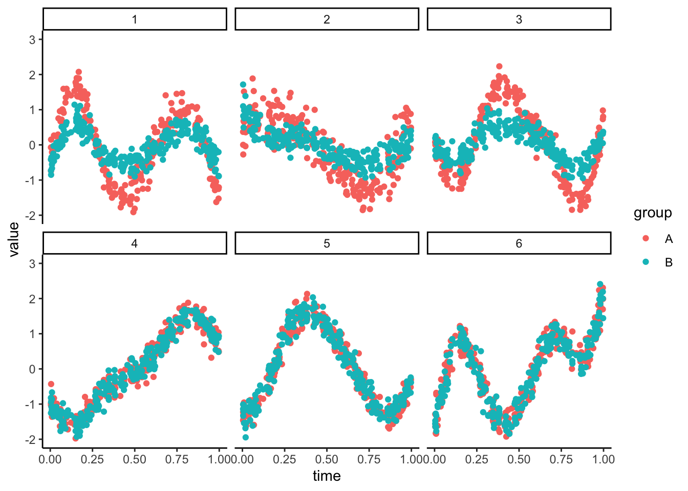
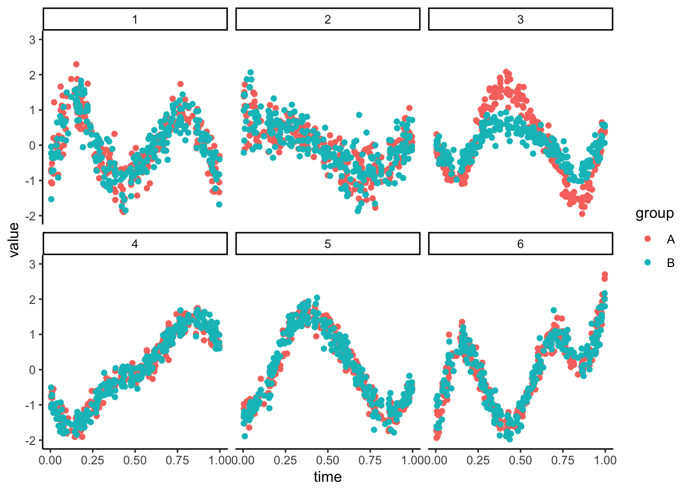

Simulation for Microbiome Analysis
2024-06-25
Chapter 1 Introduction
This website accompanies the review Leveraging Simulation in Microbiome Data Analysis. All examples discussed in the case studies there can be reproduced by running the code below, and we have also included additional introductory material about some packages that simplify our analysis.
1.1 Setup
The MIGsim package below provides wrapper functions that we will use
throughout these book. You can install it by running:
This block loads all packages that will be used in this book.
suppressPackageStartupMessages({
library(CovTools)
library(SpiecEasi)
library(SummarizedExperiment)
library(dplyr)
library(forcats)
library(gamboostLSS)
library(ggdist)
library(ggplot2)
library(glue)
library(mixOmics)
library(patchwork)
library(scico)
library(splines)
library(tibble)
library(tidyr)
library(MIGsim)
library(purrr)
library(scDesigner)
})
theme_set(theme_classic())1.2 Using SummarizedExperiment
scDesigner’s interface is built with SummarizedExperiment in mind. These
data structures simplify manipulation of sequencing experiments. For example,
they distinguish between molecule counts, which are stored in the assay slot,
and sample descriptors, which are stored in colData. At the same time, these
separate components are nicely synchronized. For example, subsetting samples
from one of these tables automatically subsets the other.
The line below loads a small subset of genera from the Atlas experiment, which profiled the gut microbiomes from 1006 healthy adults in Western Europe.
##
## Actinobacteria Bacteroidetes Firmicutes
## 1 2 21## [1] 45.15629## Allistipes et rel. Anaerostipes caccae et rel. Bacteroides vulgatus et rel. Bifidobacterium
## 289.85263 123.84211 1235.44211 120.72982
## Bryantella formatexigens et rel. Butyrivibrio crossotus et rel. Clostridium cellulosi et rel. Clostridium leptum et rel.
## 137.74737 188.54035 437.13684 129.88070
## Clostridium nexile et rel. Clostridium orbiscindens et rel. Clostridium sphenoides et rel. Clostridium symbiosum et rel.
## 73.69474 231.82807 139.35439 331.90175
## Coprococcus eutactus et rel. Dorea formicigenerans et rel. Lachnospira pectinoschiza et rel. Oscillospira guillermondii et rel.
## 222.15088 176.07368 127.75439 1560.27368
## Outgrouping clostridium cluster XIVa Ruminococcus bromii et rel. Ruminococcus callidus et rel. Ruminococcus obeum et rel.
## 91.93684 100.09123 103.61754 449.28421
## Sporobacter termitidis et rel. Subdoligranulum variable at rel. Uncultured Clostridiales I Uncultured Clostridiales II
## 423.71579 442.34737 191.28772 152.83509Exercise: To practice working with SummarizedExperiment
objects, try answering:
- How many genera are available in this experiment object?
- What was the most common phylum in this dataset?
- What was the average participant age?
- What was the average abundance of
Allistipes et rel.among people in theobeseBMI group?
Hint: The most important functions are assay(), rowData(), and colData().
Solution
## [1] 24##
## Actinobacteria Bacteroidetes Firmicutes
## 1 2 21## [1] 45.15629## Allistipes et rel. Anaerostipes caccae et rel. Bacteroides vulgatus et rel. Bifidobacterium
## 289.85263 123.84211 1235.44211 120.72982
## Bryantella formatexigens et rel. Butyrivibrio crossotus et rel. Clostridium cellulosi et rel. Clostridium leptum et rel.
## 137.74737 188.54035 437.13684 129.88070
## Clostridium nexile et rel. Clostridium orbiscindens et rel. Clostridium sphenoides et rel. Clostridium symbiosum et rel.
## 73.69474 231.82807 139.35439 331.90175
## Coprococcus eutactus et rel. Dorea formicigenerans et rel. Lachnospira pectinoschiza et rel. Oscillospira guillermondii et rel.
## 222.15088 176.07368 127.75439 1560.27368
## Outgrouping clostridium cluster XIVa Ruminococcus bromii et rel. Ruminococcus callidus et rel. Ruminococcus obeum et rel.
## 91.93684 100.09123 103.61754 449.28421
## Sporobacter termitidis et rel. Subdoligranulum variable at rel. Uncultured Clostridiales I Uncultured Clostridiales II
## 423.71579 442.34737 191.28772 152.835091.3 Warm-up: A Gaussian Example
Here’s a toy dataset to illustrate the main idea of GAMLSS. Each panel in the plot below represents a different feature (e.g., taxon, gene, metabolite…). The abundance varies smoothly over time, and in the first three panels, the trends differ by group assignment.
## Joining with `by = join_by(newdata_index)`## Warning: Removed 12 rows containing missing values or values outside the scale range (`geom_point()`).
We can try to approximate these data with a new simulator. The setup_simulator
command takes the template SummarizedExperiment object as its first argument.
The second gives an R formula syntax-style specification of GAMLSS parameters
(mean and SD, in this case) dependence on sample properties. The last argument
gives the type of model to fit, in this case, a Gaussian location-shape-scale
model.
sim <- setup_simulator(exper_ts, ~ ns(time, df = 7) * group, ~ GaussianLSS()) |>
estimate(nu = 0.01, mstop = 1000)## [==============================================>-----------------------------------------------------------------------------------------------] 2/6 ETA:
## 1s[======================================================================>-----------------------------------------------------------------------] 3/6 ETA:
## 1s[==============================================================================================>-----------------------------------------------] 4/6 ETA:
## 0s[=====================================================================================================================>------------------------] 5/6 ETA:
## 0s[==============================================================================================================================================] 6/6 ETA: 0s## Joining with `by = join_by(newdata_index)`## Warning: Removed 5 rows containing missing values or values outside the scale range (`geom_point()`).
Exercise: Right now, each panel allows for an interaction between the trend and group type. Can you define a simulator where the groups have no effect on the trends for the first two panels? This is the basis for defining synthetic negative controls.
sim <- sim |>
scDesigner::mutate(
1:2,
link = ~ ns(time, df = 7)
) |>
estimate(nu = 0.01, mstop = 1000)
sample(sim) |>
exper_lineplot()Solution: We can modify the formula so that it no longer has an interaction
with group. We just need to remove the * group from the original formula in our updated
link function. To ensure that this only applies to the first two panels, we use
1:2 in the first argument of mutate. This first argument specifies which
features to apply the new formula to.
sim <- sim |>
mutate(1:2, link = ~ ns(time, df = 7)) |>
estimate(nu = 0.01, mstop = 1000)
sample(sim) |>
exper_lineplot()## Joining with `by = join_by(newdata_index)`## Warning: Removed 5 rows containing missing values or values outside the scale range (`geom_point()`).
## R version 4.4.0 (2024-04-24)
## Platform: aarch64-apple-darwin20
## Running under: macOS Ventura 13.4
##
## Matrix products: default
## BLAS: /Library/Frameworks/R.framework/Versions/4.4-arm64/Resources/lib/libRblas.0.dylib
## LAPACK: /Library/Frameworks/R.framework/Versions/4.4-arm64/Resources/lib/libRlapack.dylib; LAPACK version 3.12.0
##
## locale:
## [1] en_US.UTF-8/en_US.UTF-8/en_US.UTF-8/C/en_US.UTF-8/en_US.UTF-8
##
## time zone: Australia/Melbourne
## tzcode source: internal
##
## attached base packages:
## [1] splines parallel stats4 stats graphics grDevices utils datasets methods base
##
## other attached packages:
## [1] lubridate_1.9.3 stringr_1.5.1 readr_2.1.5 tidyverse_2.0.0
## [5] RefManageR_1.4.0 knitr_1.47 TreeSummarizedExperiment_2.12.0 Biostrings_2.72.1
## [9] XVector_0.44.0 SingleCellExperiment_1.26.0 scDesigner_0.0.0.9000 purrr_1.0.2
## [13] MIGsim_0.0.0.9000 tidyr_1.3.1 tibble_3.2.1 scico_1.5.0
## [17] patchwork_1.2.0 mixOmics_6.28.0 lattice_0.22-6 MASS_7.3-60.2
## [21] glue_1.7.0 ggplot2_3.5.1 ggdist_3.3.2 gamboostLSS_2.0-7
## [25] mboost_2.9-10 stabs_0.6-4 forcats_1.0.0 dplyr_1.1.4
## [29] SummarizedExperiment_1.34.0 Biobase_2.64.0 GenomicRanges_1.56.0 GenomeInfoDb_1.40.0
## [33] IRanges_2.38.0 S4Vectors_0.42.0 BiocGenerics_0.50.0 MatrixGenerics_1.16.0
## [37] matrixStats_1.3.0 SpiecEasi_1.1.3 CovTools_0.5.4
##
## loaded via a namespace (and not attached):
## [1] minpack.lm_1.2-4 rpart_4.1.23 lifecycle_1.0.4 Rdpack_2.6 edgeR_4.2.0
## [6] doParallel_1.0.17 MultiAssayExperiment_1.30.2 insight_0.20.1 backports_1.5.0 magrittr_2.0.3
## [11] limma_3.60.2 sass_0.4.9 rmarkdown_2.27 jquerylib_0.1.4 yaml_2.3.8
## [16] RColorBrewer_1.1-3 ADGofTest_0.3 abind_1.4-5 zlibbioc_1.50.0 expm_0.999-9
## [21] quadprog_1.5-8 pspline_1.0-20 kde1d_1.0.7 rgl_1.3.1 yulab.utils_0.1.4
## [26] pracma_2.4.4 GenomeInfoDbData_1.2.12 ggrepel_0.9.5 tidytree_0.4.6 ellipse_0.5.0
## [31] RSpectra_0.16-1 codetools_0.2-20 DelayedArray_0.30.1 xml2_1.3.6 shapes_1.2.7
## [36] tidyselect_1.2.1 shape_1.4.6.1 UCSC.utils_1.0.0 farver_2.1.2 randtoolbox_2.0.4
## [41] base64enc_0.1-3 jsonlite_1.8.8 Formula_1.2-5 survival_3.7-0 iterators_1.0.14
## [46] systemfonts_1.1.0 foreach_1.5.2 tools_4.4.0 progress_1.2.3 ragg_1.3.2
## [51] treeio_1.28.0 Rcpp_1.0.12 rARPACK_0.11-0 BiocBaseUtils_1.6.0 gridExtra_2.3
## [56] SparseArray_1.4.8 xfun_0.44 distributional_0.4.0 withr_3.0.0 numDeriv_2016.8-1.1
## [61] fastmap_1.2.0 fansi_1.0.6 digest_0.6.35 timechange_0.3.0 R6_2.5.1
## [66] textshaping_0.4.0 colorspace_2.1-0 inum_1.0-5 copula_1.1-3 flare_1.7.0.1
## [71] utf8_1.2.4 generics_0.1.3 corpcor_1.6.10 prettyunits_1.2.0 pulsar_0.3.11
## [76] httr_1.4.7 htmlwidgets_1.6.4 S4Arrays_1.4.1 scatterplot3d_0.3-44 rngWELL_0.10-9
## [81] pkgconfig_2.0.3 geigen_2.3 gtable_0.3.5 pcaPP_2.0-4 htmltools_0.5.8.1
## [86] bookdown_0.39.1 scales_1.3.0 SHT_0.1.8 rstudioapi_0.16.0 tzdb_0.4.0
## [91] reshape2_1.4.4 nlme_3.1-164 cachem_1.1.0 libcoin_1.0-10 pillar_1.9.0
## [96] grid_4.4.0 vctrs_0.6.5 VGAM_1.1-11 huge_1.3.5 gamlss.dist_6.1-1
## [101] evaluate_0.23 mvtnorm_1.2-5 cli_3.6.2 locfit_1.5-9.9 compiler_4.4.0
## [106] rlang_1.1.4 crayon_1.5.2 labeling_0.4.3 plyr_1.8.9 fs_1.6.4
## [111] stringi_1.8.4 BiocParallel_1.38.0 nnls_1.5 assertthat_0.2.1 rvinecopulib_0.6.3.1.1
## [116] munsell_0.5.1 gsl_2.1-8 lazyeval_0.2.2 glmnet_4.1-8 Matrix_1.7-0
## [121] hms_1.1.3 stabledist_0.7-1 statmod_1.5.0 highr_0.11 rbibutils_2.2.16
## [126] partykit_1.2-20 igraph_2.0.3 memoise_2.0.1 bslib_0.7.0.9000 bibtex_0.5.1
## [131] ape_5.8